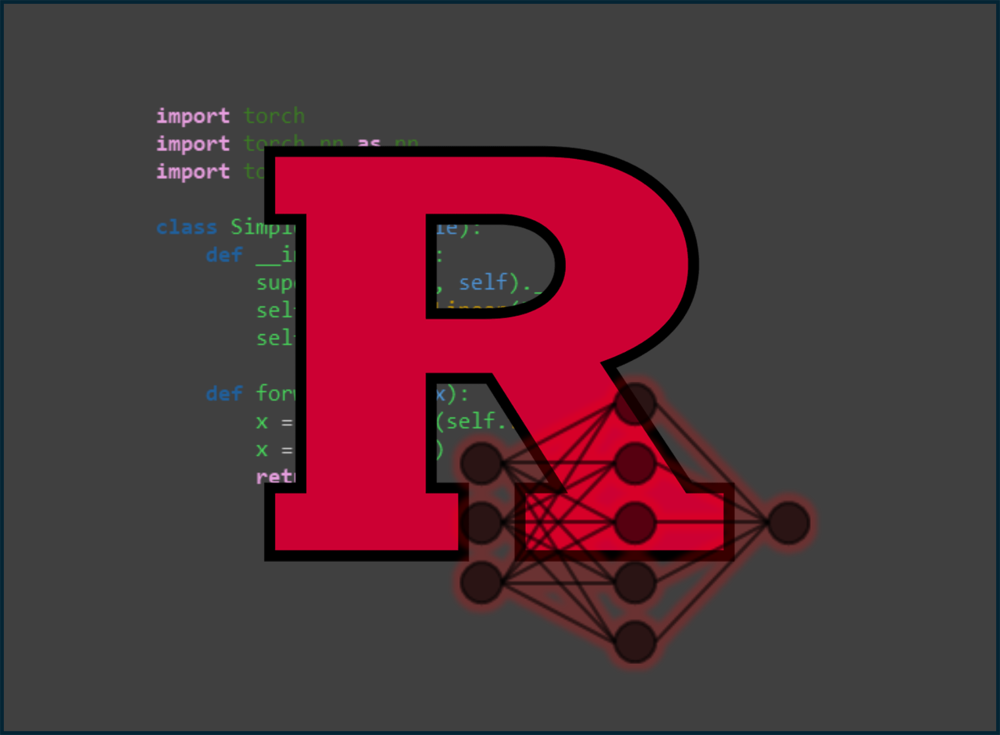

<!doctype html>
<html lang="en">

<head>
	<meta charset="utf-8">

	<title>reveal.js - Markdown Example</title>

	<link rel="stylesheet" href="./dist/reveal.css">
	<link rel="stylesheet" href="./dist/theme/black.css" id="theme">

	<link rel="stylesheet" href="./plugin/highlight/monokai.css">
</head>

<body>

	<div class="reveal">

		<div class="slides">

			<!-- Slides are separated by three dashes (the default) -->
			<section data-markdown data-separator="^\n----\n$" data-separator-vertical="^\n--\n$">
				<script type="text/template">
					## Class 6: Know Your Sensor
					---
					

					----

					## References: PyBSM
					---

					* LeMaster et al., 2017, PyBSM
					* LeMaster et al., 2018, Validating PyBSM
					* Olson et al., 2018, Statistical Evaluation of Motion-Based Modulation Transfer Function using PyBSM

					----

					## References: Digital Forensics
					---
					* Thai et al., 2013, Camera Model Identification based on the Heteroscedastic Noise Model

					----

					## References: Additional Sensor Modeling
					---
					* Konnik and Welsh, 2014, High-level numerical simulations of noise in CCD and CMOS photosensors

					----

					## The Image Processing Chain (per Konnik and Welsh)
					---
					* Step 1: Photon to Charge
					* Step 2: From Charge to Voltage
					* Step 3: From Voltage to Digital Numbers

					----

					---

					

					----

					## Another View
					---
					
					<a href="https://en.wikipedia.org/wiki/Color_image_pipeline">https://en.wikipedia.org/wiki/Color_image_pipeline</a>

					----

					## Basics
					---
					* Visual sensors: sensors that collect data in the visible light spectrum
					* Imagery sensors: sensors that collect images (in the visible spectrum or converted to the visible spectrum)
					* Electro-optical sensors: any detectors or array of detectors that convert light to an analog or digital signal
					* Infrared Sensors: sensor that converts infrared light to an analog or digital signal

					----

					## Voltage to Charge Artifacts
					---
					* Photon shot noise - uncertainty of photon capturing arising from random fluctuations when photons are collected by the photo-diode
					* Photo-Response Non-Uniformity - spatial variation in pixel output due to imperfections in the material and surface area of each photo-diode
					* Dark current / dark signal - thermally generated electrons (circuits are hot!)

					----

					## Charge to Voltage Noise
					---
					* Sense node reset noise - uncertainty in the reference voltage level due to thermal variations
					* Gain nonlinearity - amplifiers used to increase signal strength are nonlinear, as are the photo-diodes themselves

					----

					## Voltage to Digital Numbers Noise
					---
					* Quantization / bit-depth - noise introduced by mapping a continuous to discrete signal
					* Analog to digital converter nonlinearity - noise introduced by the limits of the converter circuitry itself

					----

					## Quantifying Distortion
					---
					* Signal to Noise Ratio - power in the signal vs. power in the noise
					* Modulation Transfer Function (MTF) - ability to replicate increasingly fine-grained image details
					* Human labels - ask humans to identify objects in controlled scenes and scope

					----

					## Application Discussion: Digital Forensics
					---
					

					----

					* Exploits *heteroscedastic* property of pixel variance
					* Pixel variance changes in neighborhood around mean
					* Slope of relationship is unique per camera

					----

					

                </script>
			</section>
		</div>
	</div>

	<script src="./dist/reveal.js"></script>
	<script src="./plugin/markdown/markdown.js"></script>
	<script src="./plugin/highlight/highlight.js"></script>
	<script src="./plugin/notes/notes.js"></script>
	<script src="./plugin/math/math.js"></script>

	<script>

		Reveal.initialize({
			controls: true,
			progress: true,
			history: true,
			center: true,

			plugins: [RevealMarkdown, RevealHighlight, RevealNotes, RevealMath.KaTeX]
		});

	</script>

</body>

</html>